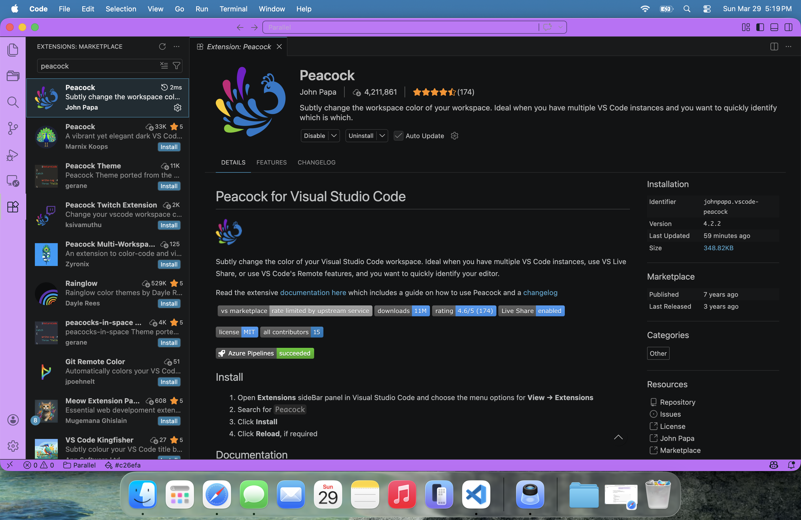
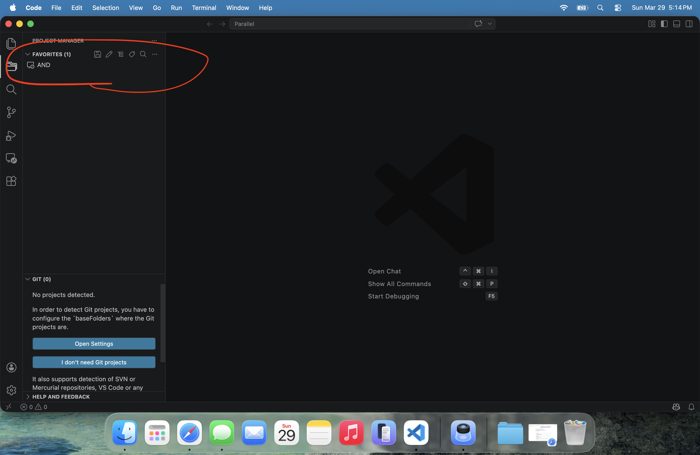
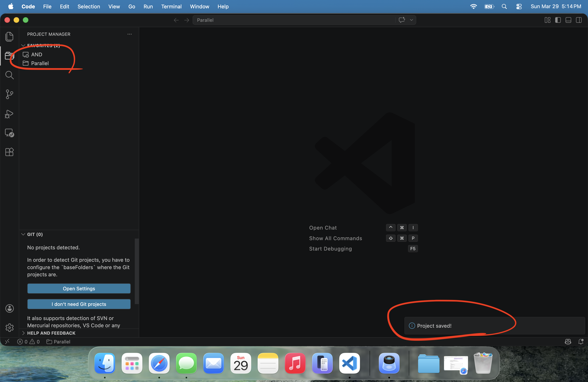
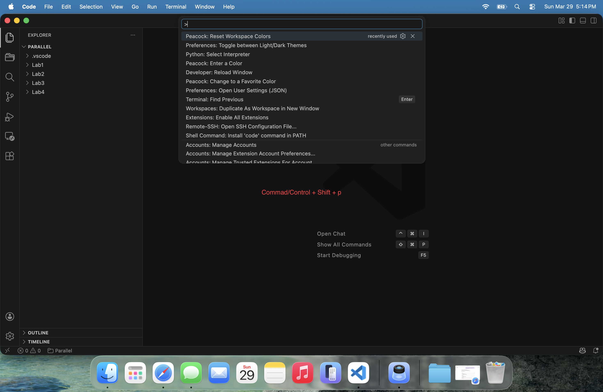
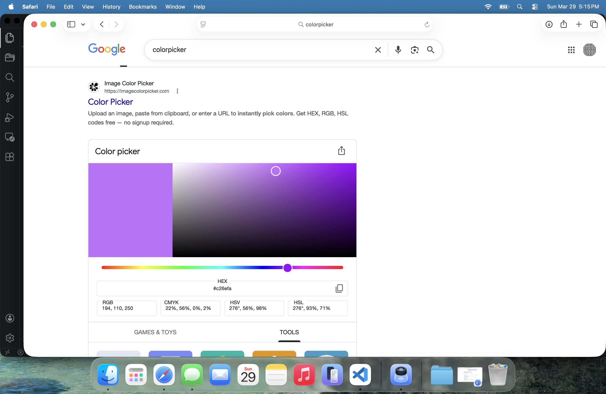
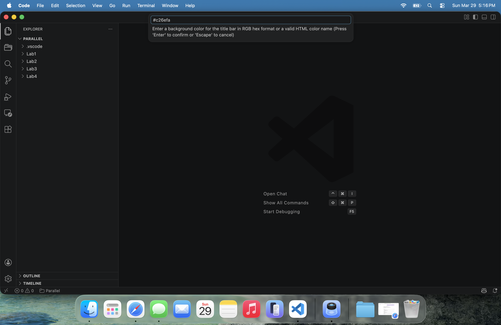
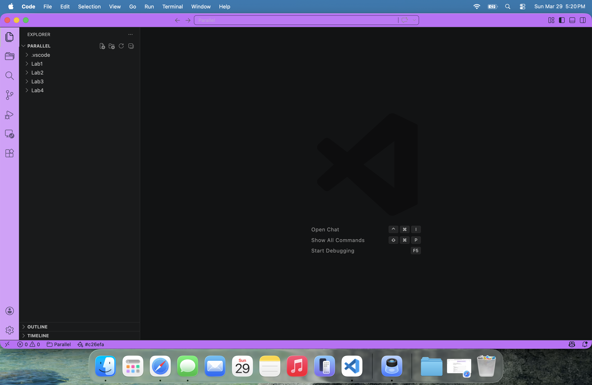

When you start working with multiple projects, it gets surprisingly easy to lose track of where you are. Peacock helps by giving each workspace its own color, which makes it much easier to tell things apart at a glance.
This is especially helpful if you have multiple VS Code windows open, or if you are switching between different projects a lot.
Install Peacock
Go to the Extensions tab and search for Peacock by John Papa.

Start from a saved project or workspace
Peacock works with the workspace you currently have open, so first open the folder or project you want to assign a color to.
For this example, we are using a project called
Parallel. If you have not saved your project yet, go
back to the Project Manager section and do that first.


Open the Command Palette
Press:

This opens the command palette at the top of VS Code.
Choose a color
Type:
Peacock: Enter a Color
Then press Enter.
You can use one of Peacock's preset colors, but it is usually nicer to pick your own.
A quick way to do that is to open a color picker in your browser and copy the HEX code of a color you like.

Paste the HEX color into the VS Code prompt after selecting Enter a Color.

Result
Once you hit Enter, the workspace color changes.

Every time you open that workspace, it will keep that color. This makes it much easier to know which project you are in without thinking about it.